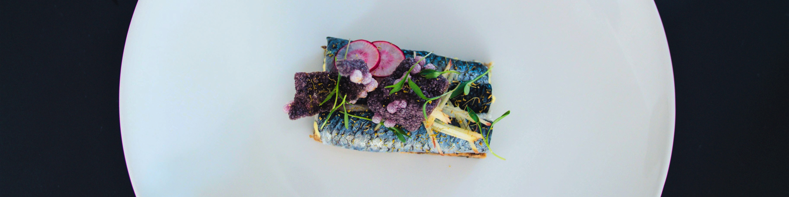

Fish and Salat
600 kcals | 50 min
Ingredients:
Step by step:
- On the baking sheet, toss the sweet potatoes with 2 tbsp (30 ml) of the oil. Season with salt and pepper. Bake for about 30 minutes, stirring occasionally, or until the potatoes are tender and beginning to brown. Let cool.
- Meanwhile, in a non-stick skillet, brown the fish in the remaining oil (1 tbsp / 15ml) until the desired doneness. Season with salt and pepper. Let cool.
- In a small bowl, combine the lemon juice, mirin and sambal oelek.